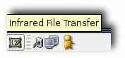

Dateitransfer
Archivierte Anleitung
Dieser Artikel wurde archiviert, da er - oder Teile daraus - nur noch unter einer älteren Ubuntu-Version nutzbar ist. Diese Anleitung wird vom Wiki-Team weder auf Richtigkeit überprüft noch anderweitig gepflegt. Zusätzlich wurde der Artikel für weitere Änderungen gesperrt.
Dieser Artikel wurde für die folgenden Ubuntu-Versionen getestet:
Zum Verständnis dieses Artikels sind folgende Seiten hilfreich:
In dieser Anleitung wird beschrieben, wie man mit Hilfe des Programmes ircp Dateien per Infrarot vom Handy empfangen und zum Handy schicken kann. Als Erweiterung gibt es ein Programm names ircp-tray, das dann als kleines Symbol im Panel verschwindet. Damit wird das Versenden/Empfangen der Dateien viel einfacher.
Hinweis:
Da die Übertragungsgeschwindigkeit äußerst mäßig ist, eignet sich diese Art der Übertragung nur bei kleinen Datenmengen. Falls es Schwierigkeiten gibt zum Mobiltelefon eine Verbindung herzustellen, kann es hilfreich sein den Abstand zum PC zu verringern.
Voraussetzungen¶
Vorausgesetzt wird, dass das Infrarotgerät korrekt eingerichtet ist. Dazu sollte man sich zuerst die Anleitung zu Infrarot durchlesen. Gibt man nun im Terminal [3] den Befehl
ifconfig
ein, sollte unter anderem ein Eintrag wie dieser hier zu finden sein:
irda0 Protokoll:IrLAP Hardware Adresse 4f:55:63:bf
UP RUNNING NOARP MTU:2048 Metric:1
RX packets:2231 errors:2 dropped:2 overruns:0 frame:0
TX packets:73877 errors:0 dropped:0 overruns:0 carrier:0
Kollisionen:0 Sendewarteschlangenlänge:8
RX bytes:248469 (242.6 KiB) TX bytes:2350298 (2.2 MiB)Zum Testen kann man dann die Infrarotfunktion des Handys anschalten und "Sichtkontakt" herstellen. Mit dem Terminalbefehl
sudo irdadump
sollte so eine Ausgabe kommen:
20:39:18.537180 xid:cmd 4f5563bf > ffffffff S=6 s=0 (14) 20:39:18.625183 xid:cmd 4f5563bf > ffffffff S=6 s=1 (14) 20:39:18.713201 xid:cmd 4f5563bf > ffffffff S=6 s=2 (14) 20:39:18.801195 xid:cmd 4f5563bf > ffffffff S=6 s=3 (14) 20:39:18.889205 xid:cmd 4f5563bf > ffffffff S=6 s=4 (14) 20:39:18.977164 xid:rsp 4f5563bf < 62319ac4 S=6 s=4 Sony Ericss hint=9124 [ PnP Modem IrCOMM IrOBEX ] (28) 20:39:18.977208 xid:cmd 4f5563bf > ffffffff S=6 s=5 (14) 20:39:19.065214 xid:cmd 4f5563bf > ffffffff S=6 s=* woive-laptop hint=0400 [ Computer ] (28)
ircp¶
Für Dapper muss zuerst sichergestellt sein, dass das Paket
ircp (universe, [2])
installiert [1] ist. Für Feisty hingegen muss das Paket
openobex-apps (universe, [2])
installiert [1] sein.
Gibt man im Terminal [3]
ircp
ein, wird die Syntax des Befehls ausgegeben, die eigentlich sehr simpel gestrickt ist. Zum Beispiel sendet man
ircp /pfad/zur/datei/bsp.dat
die Datei /pfad/zur/datei/bsp.dat an das sichtbare Handy und mit
ircp -r /pfad/zur/datei
wartet der PC darauf, dass man mit seinem Handy via Infrarot eine Datei sendet. Diese wird dann im Verzeichnis /pfad/zur/datei gespeichert.
ircp-tray¶
Hinweis!
Fremdpakete können das System gefährden.

Hier  kann man entweder das Debian-Paket herunterladen und installieren [4] oder man lädt sich die Quelldatei ircp-tray-VERSION.tar.gz herunter und kompiliert diese [4]. Nach der Installation steht das Programm mit dem Befehl
kann man entweder das Debian-Paket herunterladen und installieren [4] oder man lädt sich die Quelldatei ircp-tray-VERSION.tar.gz herunter und kompiliert diese [4]. Nach der Installation steht das Programm mit dem Befehl
ircp-tray
zur Verfügung und stellt im Tray ein Icon da (ganz links im Bild). Das Programm an sich ist äußerst übersichtlich und bedarf auch keiner näheren Erläuterung. Falls das Programm beim Start des Computers bereits ausgeführt werden soll, kann man das Programm in den Autostart [5] legen.

- Erstellt mit Inyoka
-
 2004 – 2017 ubuntuusers.de • Einige Rechte vorbehalten
2004 – 2017 ubuntuusers.de • Einige Rechte vorbehalten
Lizenz • Kontakt • Datenschutz • Impressum • Serverstatus -
Serverhousing gespendet von